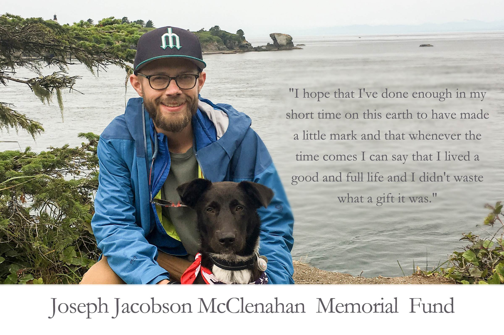

Hello family, friends and strangers,
I wanted to close out Joe’s blog with one last post. For those of you who only followed Joe on his blog, he passed away peacefully on May 5, 2018. We spent the week leading up to his death surrounded by friends and family, sharing stories, laughing, crying, listening to his favorite music and soaking up every moment with Joe.
Joseph Jacobson McClenahan died at his home in Seattle Washington on 5/5/2018 after heroically enduring 14 months of treatment for esophageal cancer. The eldest of three brothers, Joe was born on 6/28/1986 and spent an idyllic childhood in Bellingham and the Pacific Northwest. He graduated from WWU in 2010 with a degree in Geology, and from the University of Wyoming in 2012 with a master's degree in Geophysics. Joe lived and worked in Houston for 3 years before returning to his heartland in 2015. He was poised to begin a new career as a software engineer when his cancer was diagnosed. For the next 14 months, Joe explored his life with cancer in a blog (www.joemcclenahan.com) that inspired and moved its many followers. He wrote with fearless vulnerability, demonstrating resilience and grace, kindness and unconditional love. These writings reflected a man of fierce intelligence, integrity, loyalty, and courage--all deeply ingrained traits that Joe developed fully during his experience with cancer. Throughout his life, Joe lived with passion and commitment. He shared a beautiful 10-year love story with his partner Cristina Wolf. He was a devoted son, a protective brother, a sweet and tender grandson, and a steadfast friend. He nurtured these relationships and created family in every place he lived. His other passions--music, baseball, cooking, exploring the world, were best experienced with those he loved. Joe's curiosity was prodigious and fueled a myriad of other interests that would have provided a lifetime of adventure had he not run out of time. Joe is survived by his partner Cristina Wolf, his parents Richard McClenahan and Margaret Jacobson, his brothers Andrew (Kimberly Mayhle) and Michael McClenahan, his grandmother Elizabeth Jacobson, and his beloved dog Cooper who was Joe's constant companion for the last year of his life. He leaves behind many other relatives and friends whose lives he changed irrevocably and forever. A celebration of Joe's life is planned for Saturday, June 23rd at 6 PM at Depot Market Square in Bellingham. To honor him, memorial contributions can be made to Fred Hutchinson Cancer Research Center for esophageal cancer research, or to Healthcare-Now! to support single payer healthcare.
A memorial service was held for Joe on June 23, 2018. It was a beautiful service and celebration that I am sure Joe would have loved. Joe's chaplain from SCCA, Mike Yonkers, was able to lead the service and we are so grateful for his time and willingness to be a part of Joe's memorial. We were overwhelmed by the number of family and friends who came from near and far to celebrate Joe's life and offer support to us. It was a community effort to make this day happen and saying thank you doesn’t seem adequate, but on behalf of myself and the McClenahan/Jacobson family, thank you all so much!
Below are copies of the eulogies from each of Joe's family members.
Meg:
Dick and I were talking several weeks ago about this service, and shared our anxiety about speaking in front of you. How could we possibly eulogize our son, what could we say that would be adequate, that would begin to capture the joy of him, the beauty and magnificence of him? As I sat down to try and write this, I realized that my eulogy today is but a single verse in what will be a lifelong song of gratitude, of praise and love for him. I will say his name, speak of him, share funny, poignant, sweet stories about him forever; and the fact that I don’t have to tell them all to you in the next 10 minutes has helped me stand here today. I’m also reassured by the fact that most of you know a lot about Joe—even if you never met him. In the last 14 months of his life, Joe wrote his own life story in a way that showed all of us who he was and who he was becoming more beautifully than any of us ever could.
The Joe you know through his blog was once a serious, sweet boy who read voraciously, aspired to soccer greatness, played the piano, neglected his pet snake Godzilla, and could sing the score of Les Mis as enthusiastically as Weird Al Yankovich’s entire catalog. He loved baseball passionately and knew a prodigious amount of its stats and its history. Joe played catcher, which he once described to me as the thinker’s position—the manager on the field who needed to call the game, sell the pitches to the umpire, and generally know everything about his pitcher and the batters who faced him. Never the most athletically talented, he was the guy who got the “Mister Hustle” award, who worked hard and always showed up ready to play the game that remained his favorite for the rest of his life.
From the earliest age, Joe loved books. Although he cut his teeth on Goosebumps, he let me know after reading 15 or so that the plots were the same and the language repetitive. I struggled to keep up with him and provide age appropriate books, but once he discovered fantasy fiction, I gave up. From that moment on, Joe devoured every fantasy novel ever written—telling me later that as a preteen, he skipped over the sex stuff because it just got in the way of the story. By high school, we had purchased most of what was available on the fantasy shelf and he began exploring the vast world of literature. Much to our consternation (likely provoked deliberately), Joe told us then that he really didn’t see the point of college, since everything one needed to know could be found in books.
As much as Joe loved written language, he was equally passionate about music. He played classical piano from the age of 7, but wanted to make contemporary music on guitar, melodica, theremin, banjo, synthesizer, harmonica—the list goes on. Joe flirted with many of these instruments, but became instead a discerning listener, who found something interesting in every musical genre. His tastes evolved over time and also reflected his own internal work—which is so evident in the music he chose to accompany his blog posts. One of my treasured memories is driving home in the dark with 13 year old Joe after the opening concert at the Experience Music Project in Seattle. Still wired from the show, we talked the whole ride home about Eminem’s misogyny (Joe’s word) and the brilliance of his rhyme scheme. Joe taught me something about music that night, and about the sensitive young man that Dick and I were raising.
It is this sensitivity, Joe’s kindness and empathy that I want to make sure to speak about tonight—because these too were present from earliest childhood. He was a typical kid in so many ways, and the early squabbles with his brothers were frequent and frustrating for his Dad and me. Still, I remember 5 year old Joe, who sent his treasured blankie to comfort his old nanny in Wenatchee when she had hip surgery; and 12 year old Joe who went to middle school on Halloween in a pink piglet costume because his little brother wanted the three of them to be characters from Winnie Pooh. Joe was a loyal friend even when they disappointed him, and his love for his brothers was fierce and unconditional. His ability to empathize was such that he disliked it intensely when he perceived me as critical or judgmental, and his discomfort taught me much about my own prejudices. Joe had a remarkable capacity for love and loving kindness that he carried with him into adulthood and expressed so beautifully in his blog posts.
In those posts, Joe showed himself to be a man who valued love above everything else, who was profoundly grateful—gobsmacked he called it—for the love and caring he and we had been shown and who wanted always to shine it back on us. And shine it he did—ask anyone who spent the final week of Joe’s life with him what Joe’s last words were—I know that every one of us will say “love you, too!”
I have to close by speaking about the love of Joe’s life, Cristina Wolf. Theirs was a partnership for the ages—tested, committed, unwavering. They honored and respected and supported each other through challenges of distance and financial stress, through depression and self doubt, growing together and helping each other become better partners and better people. Cristina’s beautiful care of Joe never faltered, and she honored his autonomy and agency until the very end—even when it was difficult because he was suffering. Joe’s only charge to us was to make sure Cristina was happy and secure. I have many people to thank here today, but my gratitude for Cristina is profound and enduring. Thank you, Cristina for loving my son so well. I will carry you with Joe in my heart forever.
Michael:
Hello. For those who haven’t met me, my name is Michael. I am the youngest of Joe’s two brothers. I would like to start by briefly thanking everyone who has come here this evening to honor Joe. It bears mentioning that some of you have journeyed from all across the country—family and friends alike who have taken it upon themselves to travel long and inconvenient distances to be together in this community of those who loved and were loved by Joe. That community was everything to him, I think, but more on that later. For now, I’d just like to say that I know Joe would have been honored and delighted to see all of these faces, both familiar and strange, here today. So again, thank you.
(It’s difficult to be organized in mourning or to avoid the slipshod, and there’s almost a degree of hubris inherent in even attempting to eulogize another’s death. I can’t begin, now, to fully honor the depth, edge, wit, generosity, melancholy or verve with which Joe lived his life. Even more difficult is to resist the denuding, homogenizing, relentlessly anthropomorphizing obituary voice, to avoid crystallizing Joe’s memory into some totalizable and ultimately moralistic imperative. So, I apologize that what I have to say today might seem somewhat fragmentary or incomplete. It is necessarily so.)
Oddly enough, I’ve always thought of Joe as a kind of aesthete. I say “oddly” because I am aware this might seem like a curious descriptor to attach to someone so resolutely unpretentious as Joe, but it only takes remembering how passionately he could talk about music or film to understand how concerned he was with matters of taste and beauty. That his own tastes were so varied—he loved, for example, country music and contemporary pop in addition to what can only be called “stoner metal” (by which I mean his beloved Red Fang)—only testified to the fact that in seeking out the pure artistry in the world around him, Joe sought to be affected.
It was in this same vein, then, that Joe was one of those people who never shied away from the sublime. On the contrary, he actively sought it out. I’m thinking specifically of Joe’s love for geology and nature, his fascination with deep time and outer space, and the way he was particularly drawn to the more fantastic places and scenes nature has to offer—high summits, tall rock formations, volcanoes. By definition, to be presented with the sublime exposes both our sense of self and of our dominion over nature and time as fictions, and it is for that reason that it is a profoundly disorienting experience. And while that felt disorientation can for many prove uncomfortable, for Joe it was clarifying. In fact, upon reaching the summit of one particularly grueling hike on one particularly rainy day, Joe, already months into his illness, wrote on his blog:
“My understanding of how I need to spend my time on this planet is crystal clear. I’ve never felt so loved by my friends and family. I’ve rediscovered how good it feels to shine that love back. I got to the top, standing in the rain with the wind and clouds swirling around me […] and my heart felt full and resolved. I felt lucky to be on this earth, and it was good.”
I’ve read that passage over and over since Joe’s death. How pure and direct that outburst of earnest joy, and how admirable his knowledge that it is always in our relations with others that we find the truth of our happiness; that human beings should, and want to, make relationships; that we are each of us heat-seeking subjects starved for connection. Which is why, even at the risk of getting hurt, or making tremendous fools of ourselves, we will not shirk from being drawn to certain places, to certain objects, certain tastes, to music, to tears, to rocks, to memory, to vice, and of course, to other human beings. Because by so doing, each of us finds a secret, private conduit to an inner life that is not just our new life, or our true life, but our whole life.
Andy:
Hello everyone –
My name is Andy and I am one of Joe’s younger brothers – the middle child. We were roommates for the first 15 years of my life, and then again for the last 9 months of his.
Describing my brother to people who don’t know him has always been hard. In part because Joe was full of contradictions. I acknowledge that that word, contradiction, is typically used as a negative. But it need not be.
As an example, Joe was sensitive, as a lover of art and music, but he also fiercely and sometimes aggressively protected the people he loved. When I was a Freshman in HS and Joe a Senior, he formed his group of friends into a group of protectors; a team of older brothers. Like older brothers, they did give me plenty of shit. But they also made me feel safe and cared for. The line was always “no one can mess with Andy except for us.” That Freshman year, a Spanish teacher made me turn a shirt inside out because it was “offensive.” I obnoxiously made a bigger deal out of it than I needed to, and it got me into some trouble. The next day, to take heat off of me, Joe proudly wore a categorically more offensive shirt and paraded it in front of that same teacher. That was who he was. By the way i feel it is important to note that the shirt I wore that was apparently offensive read: “tell cancer to funk off.”
Joe’s music choices were also contradictory. He would headbang through some metal show one week, then sway through a harp performance the next. Music was the anchor of my relationship with Joe. He introduced me to intelligent, beautiful music, and it was music that we connected us. Music transformed us from siblings to friends. I’ve spent the last month listening to this music that made Joe and I feel so deeply and opened my world. There has been NO better therapy for me. And in this way, by bringing his music into my life, Joe gave me the tools I’ve needed to grieve his own death. This is such a special gift that I never wanted, but won’t ever take for granted.
Joe was an open minded, critical thinker, but he was simultaneously stubborn as hell.
Joe held a reverence for the natural world that I envied, but he was simultaneously analytical and fascinated by Man’s creations.
Joe would embarrass easily, and his reaction to embarrassment was visceral. if he were here right now in the crowd listening to me speak, he might have his head between his knees and his fingers in his ears, because he simply could not handle watching other people embarrass themselves. But at the same time, Joe took opportunities to belt out song lyrics that he loved in public, or dance with absolutely no shame whatsoever.
Joe was humble, yet unintentionally inspiring. And in the end, his contradictions inform Joe’s legacy in my mind. To me, his contradictions weren’t negative—they created a balanced human being.
One night in high school, Joe and I sat on the porch of a friend’s house late at night. In a lull in conversation, seemingly out of nowhere, Joe put his arm around me and said, “whatever you do in life, just make sure you are happy doing it.” Now, we may or may not have had a few adult beverages that night, it may or may not have been my first time ever having adult beverages, and it may or may not have been Joe’s fault. This is of course the job of the big brother. The lesson has always stuck with me, though. To some degree its just a platitude, and if I reminded Joe of that quote if he were here today he just might scoff and wave it off. Neither Joe nor myself subscribed to the false idea that happiness is a choice. It isn’t – reality is heartwrenching and devastating, and one cannot simply will themselves into happiness. But among all of Joe’s contradictions, one thing has always been constant: Joe sought out joy where he could find it, and encouraged others to do the same.
There is so much more I can say about Joe. Instead, I am just going to play a little movie I made in his honor. I edited it, but through his music, experiences, and his own words, it is written by Joe.
Cristina:
Joe and my relationship started out how many great ones do, as friends. We initially became friends because we were in the same chemistry class at Western and sat next to each other every day. It wasn’t long before we were studying together in the library and not long after that Joe asked me to be his girlfriend. Now, that would be a nice beginning to our love story, but I made it difficult for him and told him I wasn’t interested in being in a relationship. He was disappointed, but determined, and he kept trying. One night, laying on the roof at the Myrtle house, as a star cascaded across the sky, he said “I wished on that shooting star that one day you would be my girlfriend.”
Looking back, I can say that without a doubt, being Joe’s partner was the best decision I ever made.
After a decade together, Joe and I learned relationships are a lot of hard work. But we were so fortunate to find each other so young and be equally dedicated to making our relationship work. Being able to pursue our individual dreams, while having a supportive partner was essential in making those early years in our relationship last. We pushed each other just outside our comfort zones so we still felt safe, but continued to grow. Joe challenged me to be better, encouraged me to believe in myself and that no matter what his support was unconditional. He taught me to let the little things go, that it was ok to not always know how things would turn out and that you should say yes more often. His love empowered me to expand what I thought I was capable of. Through the years we built our relationship on a foundation of caring for one another and valuing our time together.
One of the good things that came out of spending 4 years in a long distance relationship was the handwritten letters we would send each other. We kept every single one. After Joe died, I spent a lot of time rereading some of them and it reaffirmed how lucky we were to have found each other. Joe would always come up with a new way to describe the quantity of his love. One of my favorites was when he wrote, “I love you one astronomical unit, and since the universe is always expanding, my love for you keeps growing.” I’m confident that as long as the universe exists, I will feel Joe’s love in my life.
If our love had been growing steadily for 10 years, it grew exponentially in our last year together. Every single day I felt so privileged to be his caregiver and witness a strength I had never seen in anyone before. He continued to be the most adoring partner to me. Even though his body was failing him, his capacity to love grew. I witnessed a determination in Joe to not let his disease take away his spirit. Cancer did not define Joe. He lived fully, purposefully and generously and never gave up hope. That will inspire me, and I know many of you, for the rest of our lives.
Joe signed off each of his blogs with “Thanks for reading” and while I have this opportunity I want to thank you for all of the support we received this past year and a half. I know Joe was able to individually express his love and appreciation to many of his friends before he died, but I want to reiterate how much those friendships carried us through such a difficult period.
Even while faced with devastating disease, Joe remained grateful for the opportunity to watch a baseball game, play a board game or share a good meal with his friends. There are too many people to individually thank in this space, but every single kind act was fully appreciated and frequently brought us to tears. Although he never shied from expressing his thanks, I know he’d want me to tell you all one more time, thank you, it meant the world to us.
And finally I just want to say to Joe, wherever you are, thank you for 10 incredible years, full of adventure and love. You lived a good life, a full life and you certainly did not waste what a gift it was.
Dick:
Meg and I raised three boys. I will confess, with us being somewhat type A highly organized people we tried to plan each of our boys’ entry onto this earth to be at convenient times related to our professional training and work. With Joe, our first born, I think, we were the most successful with this, in that we timed his birth to happen at a time that would minimally disrupt the completion of our residency training and the start of our new jobs in the summer of 1986. We did pretty well with this timing for Joe. He was born in the early hours on the morning of the celebratory breakfast marking the end of our residency training, that our residency program was throwing in Cincinnati Ohio on June 28th. With this newborn boy swaddled at his mother’s breast, Meg graciously allowed me to leave her 6-7 hours after Joe was born to attend this event. She obviously was not able to make it. I walked in to the meeting hall filled with residents, medical students, faculty and parents in the middle of the program. Everyone there knew why I was late and I was met with a standing ovation. My first egocentric thought was how nice that I am getting this ovation, but I quickly realized that this was a well deserved ovation for Joe’s entrance into the world.
Being a father was and still is one of the most wonderful things to happen in my life and it started with Joe. I was in absolute awe of this amazing person that Meg and I made. He was perfect. In fact, I felt that was so much the fact that I entered Joe one of those “most beautiful baby” contest in his first few months of life. I distinctly recall thinking that he was an absolute shoe in to win this. I was shocked when in fact he did not make the cut. How could they have passed over this guy?
Joe was wonderful to parent. He was smart, curious, warm, loving and fun. I could take a lot of time giving you all examples of this but instead I am going to mention that there was another side to this experience. There were challenges, especially as his siblings came into the world. He had his share of brotherly nastiness with his younger siblings, Andy and Mike, with bickering levels so bad in our home in the 90s that we needed to take action. This was the time of Steven Covey and the book “the Seven Habits of Highly Successful Families” , which sat at our bedside for a number of years. One of the pieces of advice he gave was to have formal family meetings which we did. . We held these meetings with the enticement of all the maccycheese you could eat , at the Old Town Buffet “all you can eat” restaurant at the mall. I kept minutes of these meetings and these are treasured family documents which I can share another time if anyone is interested.
These meetings though were not enough and we decided that we needed a higher level of intervention. We forced our kids to join us in family counseling. One session proved to be all that was needed, not because (all due respect to his therapist) of some amazing therapeutic intervention or technique, but because Joe was so appalled at having to do this at age about 11 that after that first session all we had to do was simply say “family counseling” and he would fall into place.
But Joe grew into an absolute devoted and loyal brother to Andy and Mike, providing them with unconditional acceptance, support, love and guidance both intentionally and just by example. His most important quality to me I think was that he knew how to love another person with all his heart completely. This is of course reflected best by his amazing relationship with his partner Cristina.
I will so miss not sharing what would have been an amazing love and devotion to his own children.
I bonded with Joe over a number of things but a big one was the love of the out of doors and nature. We had Joe in the mountains within a few weeks of his birth and walked many miles of trails of the North Cascades and other mountains. One of my most memorable experiences as a father to Joe, was being tent mate with him every two weeks or so for the 6 month Bellingham Mountaineers Basic Climbing Course we took together while he was an undergrad student at WWU. Joe’s last hike in the Seattle area was up the rather brutal Mailbox Peak trail. Many of you probably know this iconic Seattle area trail. 12 miles round trip , 4000 foot elevation gain. Joe, with a fuck cancer attitude pushing him managed to do this hike in April 2017 in a rainstorm, two months into his chemotherapy and 50 or so pounds lighter than his normal weight. He left a note in the mailbox saying he had cancer but that he would be back. You saw some pictures of that on the video.
The first hike I did with Joe was with him in my pack on my back as a 6 week old to a high lake above Lake Wenatchee. The last hike I did with him was again, with him in my pack, and accompanied by Mike and Andy, up the Mailbox Peak trail last Sunday on Father’s Day. So Joe did get back there and is there forever now, with spectacular views of the green valleys and Mt Rainier.
Many of you have reached out to Meg, Mike, Andy and me in such amazing and wonderful ways. Meals, dog sitting, opening your homes to out of town guests, yard and garden work, help with this service. Thank you all so much. And the cards and texts...... They all are appreciated. And I have read every word.
I know people still are wondering what they can do. Here are couple of ideas for you:
Read his blog if you haven’t yet. It brings me comfort to know when someone has gotten to know Joe through that writing.
Reach out to Joe’s brothers. Sibling grief is often underappreciated but is huge.
Become a regular consistent blood donor. At one point over a period of a week, when Joe’s tumor was bleeding he received 18 units of blood. His total blood volume was replaced twice over. He wrote about his appreciation for those 18 people that helped him through that by giving their blood.
And then there is the Fred Hutchinson esophageal cancer research fund that we have identified that is a place to make a tax deductible donation. There are cards with information about this here. This money will be directed to a very specific study we have carefully checked out, that we think has potential to have a real impact on this cancer.
I would like to talk a little about myself now and what I am going through, if I may. I know that all of you are aware that losing a child or a sibling involves an especially profound level of despair and grief. I know it is hard for you all too, especially those that were close to Joe. Some may struggle with figuring out what to say to me. Fuck, I would not know what to say to me...
I may be able to help you here a little. I’d like to read something from a writer that is a member of the club that no one wants to join, that of grieving parents. Her name is Paula Stephens and she gives us some guidance on helping each other going forward. I have paraphrased just a little:
If you see something that reminds you of Joe, tell me. If you are reminded at the holidays or on his birthday that I am missing Joe, please tell me you remember him. When I speak his name or relive memories, relive them with me, don’t shrink away. If you never met Joe, don’t be afraid to ask about him. One of my greatest joys for the rest of my life is going to be talking about Joe. I will never forget him, and in fact my loss will always probably be right under the surface of other emotions, even happiness. I would rather lose it emotionally because you spoke Joe’s name and remembered him, than try and shield myself from the pain and live in denial.
I have one last thing I would like to say. I told you how Joe received a standing ovation on the morning of his birth. I would like to ask you to indulge me here and once again, to honor a life well lived, stand and give Joe a well deserved ovation.
Our talented friend Max Chesnut was kind enough to film the service portion for those who were not able to attend or would like to rewatch it. Thank you Max!
Joe's blog wouldn't be complete without a Cooper update. He is adjusting to being home alone all day after spending the first year of his life with us constantly by Joe's side. He is a great source of joy, comfort and alleviates some of my loneliness, which is definitely the hardest part about losing Joe for me. I’m sure the comfort he brings me is the same that he brought Joe throughout the many months he was sick at home. He went on a hike with me and our friend Rylan up to the top of Mailbox Peak on what would have been Joe’s 32nd birthday. Here’s a little video of the hike.
We were able to organize a camping trip over Joe's birthday weekend with many of Joe's close friends. The photo at the top of this post is the wonderful group of people who came out to Salmon La Sac for the first annual Joe Day camping trip. I look forward to celebrating Joe's birthday with his friends for many years to come!
Finally, I want to thank each of you who have donated to Joe’s memorial fund. We are excited to meet with Dr. Vaughan at Fred Hutch next week to discuss the next steps and what kind of impact this money will have on his research. Joe would be so proud of the support shown by his community to help other people in the future. I cannot think of a better legacy to honor Joe.
This blog will remain active for the foreseeable future. I find comfort in rereading Joe’s words and will continue to strive to live with the kind of bravery and graciousness that poured so generously through his writing.
Thanks for reading.
Love you all,
Cristina